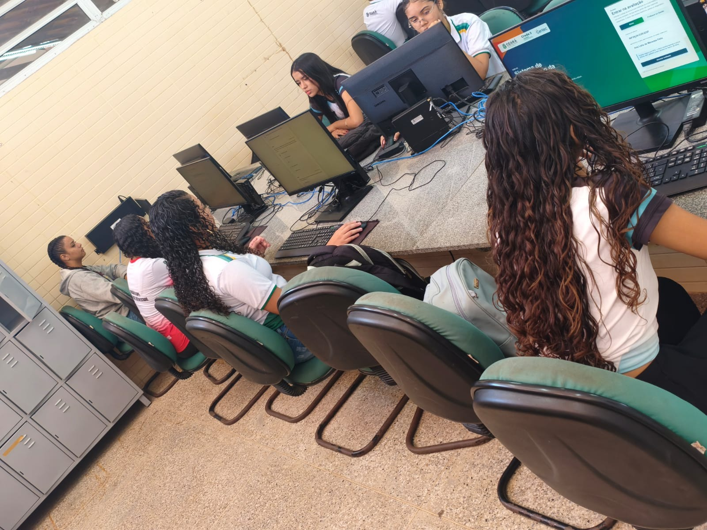

Por décadas, as crianças e jovens das comunidades rurais brasileiras foram forçados a escolher entre estudar e permanecer na terra. Ou iam para a cidade buscar a escola, ou ficavam no campo sem ela. A Educação do Campo nasceu justamente para acabar com essa falsa escolha — e a EEMPC Francisco Araújo Barros, no coração do Assentamento Lagoa do Mineiro, é uma das expressões mais vivas dessa conquista no Ceará.
Uma escola diferente começa na luta

Durante décadas, o Brasil tratou a educação rural como um problema menor. As escolas do campo usavam os mesmos livros, o mesmo calendário e os mesmos conteúdos das escolas urbanas — como se os filhos dos agricultores precisassem aprender a mesma coisa que os filhos dos industriais, da mesma forma e no mesmo ritmo.
Isso começou a mudar no final do século XX, quando os movimentos sociais do campo — sobretudo o MST — passaram a exigir não apenas terra, mas também escola. Uma escola que respeitasse o calendário agrícola, os saberes da comunidade, a identidade do camponês e o vínculo com o território. Não uma escola no campo, mas uma escola do campo — feita por e para quem vive da terra.
"Por uma Educação do Campo: o campo tem o direito a uma educação pensada desde o seu lugar e com a sua participação."
— I Conferência Nacional Por Uma Educação do Campo, Luziânia/GO, 1998
O que é Educação do Campo
A Educação do Campo é uma modalidade educacional reconhecida pela legislação brasileira que atende às populações rurais em suas especificidades: agricultores familiares, assentados, ribeirinhos, quilombolas, pescadores e povos da floresta. Seu princípio central é simples e revolucionário: a escola deve ser construída a partir da realidade de quem a frequenta, não imposta de fora para dentro.
A LDB (Lei 9.394/1996), no Art. 28, determina que os sistemas de ensino promoverão as adaptações necessárias para a educação rural, considerando conteúdos curriculares e metodologias apropriadas às reais necessidades e interesses dos alunos da zona rural, organização escolar própria (incluindo adequação do calendário agrícola) e adequação à natureza do trabalho na zona rural. O Decreto Federal 7.352/2010 regulamenta especificamente a Política Nacional de Educação do Campo.
Diferentemente do que acontecia antes, a Educação do Campo reconhece que o saber do camponês tem valor científico e pedagógico. A observação das fases da lua para o plantio, o conhecimento das plantas medicinais, a leitura do tempo pelo comportamento dos animais — tudo isso é conhecimento legítimo que merece ser parte do currículo.
Os seis pilares que sustentam a Educação do Campo
Vínculo com o território
A escola está enraizada no lugar onde vive a comunidade, respeitando sua cultura e modo de vida.
Calendário agrícola
O tempo escolar respeita os períodos de plantio, colheita e as sazonalidades do campo.
Participação da família
Pais e comunidade são parceiros ativos no processo educativo, não apenas espectadores.
Saberes locais no currículo
O conhecimento tradicional da comunidade integra o currículo como conteúdo legítimo.
Formação política
A escola forma cidadãos críticos, conscientes de seus direitos e protagonistas da transformação.
Gestão comunitária
A comunidade participa das decisões da escola, garantindo que ela sirva aos seus interesses.
Educação do Campo Profissional: o técnico que fica na comunidade

A Educação do Campo Profissional vai além do ensino médio regular: ela integra a formação técnica ao projeto de vida do campo. Em vez de preparar jovens para migrar para as cidades em busca de emprego, ela forma técnicos capazes de transformar a própria realidade rural onde já vivem.
Esse modelo é chamado de Ensino Médio Integrado (EMI): o aluno cursa ao mesmo tempo o ensino médio obrigatório e a habilitação técnica, em uma grade curricular que costura os saberes gerais com os saberes profissionais. O jovem termina os três anos com o diploma de ensino médio e a certificação técnica — pronto para atuar na sua área dentro ou fora da comunidade.
PRONATEC Campo e Resolução CNE/CEB 1/2002
A Resolução CNE/CEB n.º 1, de abril de 2002, estabelece as Diretrizes Operacionais
para a Educação Básica nas Escolas do Campo, garantindo que os projetos pedagógicos
das escolas rurais considerem "a diversidade do campo em todos os seus aspectos
sociais, culturais, políticos, econômicos, de gênero, geração e etnia." O
PRONATEC Campo ampliou essa perspectiva ao financiar cursos técnicos voltados
especificamente para as cadeias produtivas do ambiente rural.
Na EEMPC Francisco Araújo Barros, essa proposta se concretiza com dois cursos técnicos integrados ao ensino médio: Técnico em Informática e Técnico em Agropecuária. Não por acaso — um prepara os jovens para usar a tecnologia a serviço da comunidade (como este próprio portal), e o outro forma profissionais capazes de modernizar e aprimorar a produção agrícola familiar.
Pedagogia da Alternância: o ritmo da terra entra na escola
O coração metodológico da Educação do Campo Profissional é a Pedagogia da Alternância — uma forma de organizar o tempo escolar que alterna períodos de estudo na escola com períodos de aplicação na comunidade. Não se trata de uma divisão mecânica do tempo: é uma filosofia inteira que entende que aprender e viver não podem ser separados.
A Alternância nasceu na França, quando um grupo de agricultores de Lauzun, no Lot-et-Garonne, criou a primeira Maison Familiale Rurale (MFR) para que os filhos pudessem estudar sem abandonar o trabalho na propriedade familiar. Chegou ao Brasil em 1969, em Anchieta (ES), através das Escolas Famílias Agrícolas (EFAs).
A alternância funciona em dois tempos complementares, que se retroalimentam continuamente ao longo do ano letivo:
⏱ Tempo Escola — TE
Na escola
- Aulas presenciais com professores
- Disciplinas do currículo regular
- Conteúdos técnicos e científicos
- Místicas, assembleias e coletivos
- Pesquisa e sistematização de saberes
- Planejamento do Tempo Comunidade
- Partilha das vivências do TC anterior
🌾 Tempo Comunidade — TC
Na comunidade
- Pesquisa da realidade local
- Caderno da Realidade (registro)
- Atividades produtivas na família
- Aplicação dos conteúdos técnicos
- Visitas orientadas de professores
- Entrevistas com lideranças e anciãos
- Relatório de atividades para socialização
O que torna essa estrutura revolucionária é que a comunidade se torna sala de aula. Quando um estudante do Técnico em Agropecuária visita um agricultor experiente para documentar suas técnicas de consórcio de culturas, ele está fazendo pesquisa de campo com valor acadêmico. Quando uma estudante do Técnico em Informática mapeia as plantas medicinais do assentamento para um portal digital, ela está integrando tecnologia, botânica e memória comunitária em um só projeto.
Tempo Comunidade: quando a escola vai até a família
O Tempo Comunidade (TC) não é simplesmente uma "tarefa de casa" ampliada. É um período estruturado de pesquisa, prática e reflexão que acontece na propriedade familiar, na comunidade e no território — com acompanhamento pedagógico ativo dos professores, que realizam visitas às famílias para orientar e registrar o processo.
Durante o TC, o estudante usa o Caderno da Realidade — um instrumento pedagógico que funciona como diário de bordo e portfólio ao mesmo tempo. Nele, são registradas as pesquisas sobre a realidade local, as entrevistas com membros mais velhos da comunidade, os dados sobre a produção familiar e as reflexões sobre os temas estudados na escola.
📓 O Plano de Estudo
O principal instrumento do Tempo Comunidade é o Plano de Estudo — um
roteiro de pesquisa elaborado coletivamente por estudantes e professores no final
do Tempo Escola. Cada Plano de Estudo parte de uma problematização da
realidade: uma pergunta sobre a vida da comunidade que o estudante vai
investigar durante o TC. Ao retornar, ele partilha suas descobertas com a turma,
enriquecendo o coletivo com o saber de cada família e território.
Essa dinâmica tem um efeito que vai além do aprendizado individual: ela valoriza os saberes dos pais e avós dos estudantes. O agricultor que nunca foi à escola passa a ser reconhecido como fonte de conhecimento legítimo. A avó que sabe preparar remédios de planta passa a ser consultada como especialista. A escola, assim, deixa de ser um lugar que desvaloriza o campo para se tornar um espaço que o celebra.
As Místicas: o ritual que alimenta a alma coletiva
Quem entra pela primeira vez em uma escola do campo ligada à Pedagogia da Alternância e aos movimentos sociais rurais se depara com algo incomum: antes das aulas começarem, os estudantes se reúnem, alguém acende uma vela ou segura uma flor, há músicas, poesias, símbolos. Isso tem um nome — e um significado profundo.
A mística é um ritual coletivo de identidade, memória e pertencimento. Nascida no interior do MST como forma de manter viva a dimensão espiritual e simbólica da luta pela terra, ela foi incorporada às escolas do campo como prática pedagógica regular — um momento de conexão emocional e política antes da rotina escolar.
Não é uma cerimônia religiosa. É um espaço de expressão criativa coletiva que usa símbolos do campo — sementes, terra, ferramentas, bandeiras, fotos de lideranças, flores nativas — para lembrar a todos que estão ali não apenas para aprender conteúdos, mas para fortalecer uma identidade e um projeto coletivo.
Tipos de mística nas escolas do campo
Mística de Abertura
Mística de Encerramento
Mística de Luta
Mística Temática
"A mística não é enfeite. É a alma da nossa pedagogia. É o momento em que lembramos por que estamos aqui — e de onde viemos."
— Educadores das Escolas Família Agrícola do Brasil
Na EEMPC Francisco Araújo Barros, as místicas fazem parte do cotidiano escolar. São organizadas pelas próprias turmas em sistema de rodízio — cada grupo fica responsável pela mística de um período, planejando-a como se fosse um projeto artístico e político. O resultado é que os estudantes desenvolvem habilidades de comunicação, criatividade e liderança ao mesmo tempo em que aprofundam sua consciência sobre a história e a identidade de sua comunidade.
A EEMPC Francisco Araújo Barros: a escola que a comunidade conquistou

O nome da escola não é uma homenagem qualquer. Francisco Araújo Barros nasceu em 31 de maio de 1945 em Lagoa do Mineiro. Casou com Maria de Jesus da Silva, teve oito filhos e foi apenas alfabetizado — o difícil acesso à escola era a mesma injustiça que ele lutava para superar. A partir de 1984, organizou trabalhadores para a luta pela terra. Em 12 de agosto de 1987, durante trabalho coletivo, foi morto a tiro e degolado com sua própria ferramenta de trabalho — Seu nome na fachada da escola é um lembrete diário de que a educação que acontece ali foi conquistada com sangue e luta.
A escola foi autorizada pelo Decreto Estadual n.º 30.493/2011 e iniciou suas atividades em 3 de março de 2011. A solenidade oficial de inauguração aconteceu em 15 de fevereiro de 2012, com a presença da Secretária de Educação Izolda Cela, representantes do MST, sindicatos, lideranças políticas e a comunidade. O empreendimento contou com investimento de R$ 3,6 milhões dos governos federal e estadual: 12 salas de aula (capacidade para 1.600 alunos nos três turnos), biblioteca, laboratórios, anfiteatro, pátio coberto, ginásio poliesportivo. O assentamento doou 10 hectares para o Campo Experimental — laboratório vivo de tecnologias agroecológicas. Desde então, funciona no modelo de Educação Profissional em Tempo Integral, com estudantes que passam os períodos de Tempo Escola em regime de internato — morando, comendo e estudando juntos, fortalecendo os laços de solidariedade e a identidade coletiva.
- Regime de tempo integral durante o Tempo Escola, com internato para estudantes de comunidades distantes
- Dois cursos técnicos integrados: Técnico em Informática e Técnico em Agropecuária
- Adoção plena da Pedagogia da Alternância com Tempo Escola e Tempo Comunidade estruturados
- Visitas dos educadores às famílias durante o Tempo Comunidade
- Místicas como prática pedagógica cotidiana, organizadas pelas turmas em rodízio
- Currículo integrado que articula formação geral, técnica e os saberes da comunidade
- 249 alunos distribuídos em 8 turmas em 2025, provenientes de 25 comunidades do entorno do assentamento
- Inauguração oficial em 15/02/2012, investimento de R$ 3,6 milhões, 12 salas, 10 ha de Campo Experimental
- Projetos de pesquisa que unem tecnologia, agroecologia e memória comunitária
"A escola foi uma conquista mais importante até mesmo que a Igreja Católica da comunidade."
— Dona Chiquinha Louvado (Francisca Martins), assentada do Lagoa do Mineiro, 2016
"Foi isso que nois desejemos desde o início, e foi isso que nois conseguimos — e hoje ela tá lá, bonita com nossos filhos trabalhando."
— Dona Maria Bia (Maria Expedita Irineu da Silva), assentada do Lagoa do Mineiro, 2016
"A gente ver que tem uma pequena contribuição na conscientização com o natural, nessa discussão da agroecologia, de uma matriz tecnológica diferente, vinculada à vida do ser humano."
— Cosma Damasceno, Coordenadora Pedagógica da EEMPC Francisco Araújo Barros, 2016
O que torna essa educação genuinamente diferenciada
É comum ouvir que a Educação do Campo é uma educação de "segunda linha" — rural, distante, com menos recursos. Essa percepção ignora algo fundamental: as escolas do campo, quando implementadas com seriedade, oferecem algo que dificilmente se encontra nas escolas urbanas convencionais.

Sentido. O estudante de uma escola do campo sabe para que está aprendendo. O técnico em informática que vai usar suas habilidades para criar sistemas que beneficiem sua família e sua comunidade tem uma motivação que nenhum sistema de gamificação escolar urbano consegue replicar.
Pertencimento. A alternância impede o fenômeno do "desenraizamento" — jovens que estudam, se formam e nunca mais voltam para a comunidade. Ao contrário: a escola cria laços tão fortes com o território que os egressos frequentemente retornam como agentes de desenvolvimento local.
🎓 O Portal da Comunidade como exemplo vivo
Este portal — que você está navegando agora — foi desenvolvido por estudantes
do Curso Técnico em Informática da EEMPC Francisco Araújo Barros como projeto
para o Ceará Científico 2026. Em vez de um trabalho escolar
desconectado da realidade, os estudantes criaram um produto digital real que
documenta a história, a biodiversidade e os saberes agrícolas de sua própria
comunidade. Isso é Educação do Campo Profissional funcionando na
prática.
Marcos da Educação do Campo no Brasil e no assentamento
-
1935
Origem da Alternância — França Jean Peyrat e o padre Granereau criam a primeira Maison Familiale Rurale em Lauzun, na França, com a Pedagogia da Alternância.
-
1969
Alternância chega ao Brasil Primeira Escola Família Agrícola (EFA) inaugurada em Anchieta, Espírito Santo, trazendo a Pedagogia da Alternância para o campo brasileiro.
-
1996
LDB — Art. 28 Lei de Diretrizes e Bases da Educação Nacional reconhece as especificidades da educação rural e abre caminho para adaptações curriculares e de calendário.
-
1998
I Conferência Nacional Por Uma Educação do Campo Em Luziânia (GO), movimentos sociais, igrejas e educadores consolidam a pauta da Educação do Campo como política pública.
-
2002
Diretrizes Operacionais — CNE/CEB 1/2002 Resolução CNE estabelece as Diretrizes para a Educação Básica nas Escolas do Campo, incluindo adequação curricular, calendário agrícola e gestão comunitária.
-
2010
Decreto 7.352 — Política Nacional de Educação do Campo Marco legal definitivo que regulamenta a Educação do Campo como política de Estado, incluindo o PRONERA e as licenciaturas em Educação do Campo.
-
2011
EEMPC Francisco Araújo Barros — Itarema, CE A escola do Assentamento Lagoa do Mineiro inicia suas atividades em 3 de março de 2011, com Educação Profissional em Tempo Integral e Pedagogia da Alternância.
-
2022–23
Implantação dos cursos técnicos EEMPC Francisco Araújo Barros passa a oferecer os cursos técnicos integrados em Informática e Agropecuária, aprofundando a proposta de formação profissional do campo.
-
2026
Portal da Comunidade — Ceará Científico 2026 Estudantes do Técnico em Informática criam o Portal Digital da Comunidade, documentando a história, os saberes e a biodiversidade do assentamento para o mundo.
A escola no coração de um Ponto de Cultura
A EEMPC Francisco Araújo Barros não existe isolada: ela está no centro de um território vivo de arte, memória e identidade. O Assentamento Lagoa do Mineiro é um Ponto de Cultura desde 2005, quando o Projeto Lagoa das Artes foi contemplado pelo Programa BNB de Cultura. Juntamente com mais quatro assentamentos, formou o coletivo "Nós: Artistas da Vida", reunindo cerca de 1.300 pessoas em torno da cultura popular tradicional.
A escola é palco das mais diversas atividades e expressões culturais do assentamento: a Caminhada dos Mártires (realizada todo 12 de agosto desde 2002, com início na comunidade Corrente e encerramento na Igreja Nossa Senhora da Libertação), as místicas, o reisado, os dramas, o coral juvenil, os cordéis escritos pelos alunos e o Torém — tradição indígena mantida pela descendência da comunidade.
Manifestações do Ponto de Cultura:
- Grupo de Reisado e Drama — cultura popular tradicional passada de geração em geração
- Grupo de Teatro — jovens que representam a identidade de uma luta vivida no próprio território
- Coral Juvenil — estudantes que cantam a musicalidade religiosa e cantigas diversas
- Literatura de Cordel — escritos pelos alunos das escolas, retratando a história da luta pela terra
- São Gonçalo — dança tradicional como pagamento de promessas
- Torém — tradição indígena mantida em momentos festivos
- Místicas — memórias históricas que relembram mártires e acontecimentos da luta
- Caminhada dos Mártires — maior mística do assentamento, realizada todo 12 de agosto
O campo tem o direito de ser protagonista de sua própria educação
A Educação do Campo não é um privilégio — é uma reparação histórica. Por décadas, as populações rurais foram tratadas como se não merecessem educação de qualidade, como se seus saberes fossem primitivos e seus modos de vida fossem obstáculos ao progresso. A Pedagogia da Alternância, as místicas, o Tempo Comunidade e a formação profissional integrada provam que é possível educar com excelência sem arrancar as pessoas de suas raízes.
Na EEMPC Francisco Araújo Barros, cada mística acesa, cada Plano de Estudo entregue, cada visita de professor à família de um estudante é um ato de afirmação: esse território tem valor, essa história merece ser contada, esses jovens merecem uma formação que honre quem eles são.
"Educação do campo é aquela que nasce da terra, cresce com a comunidade e floresce quando os jovens decidem ficar — e transformar o lugar onde nasceram."
— EEMPC Francisco Araújo Barros · Itarema, CE · Ceará Científico 2026
Créditos e ficha técnica
EEMPC Francisco Araújo Barros · Itarema, CE
Educação Profissional em Tempo Integral · Itarema, CE
Portal Digital da Comunidade — Assentamento Lagoa do Mineiro
214 famílias · 7 comunidades · Itarema, CE · desde 1986
▶ Referências bibliográficas
- BRASIL. Lei n.º 9.394, de 20 de dezembro de 1996. Lei de Diretrizes e Bases da Educação Nacional. Brasília: MEC, 1996. Art. 28.
- BRASIL. Decreto n.º 7.352, de 4 de novembro de 2010. Dispõe sobre a política de educação do campo e o PRONERA. Brasília: Casa Civil, 2010.
- BRASIL. Resolução CNE/CEB n.º 1, de 3 de abril de 2002. Institui Diretrizes Operacionais para a Educação Básica nas Escolas do Campo. Brasília: CNE, 2002.
- CALDART, Roseli Salete. Pedagogia do Movimento Sem Terra. 3. ed. São Paulo: Expressão Popular, 2004.
- CALDART, Roseli Salete et al. (Orgs.). Dicionário da Educação do Campo. Rio de Janeiro/São Paulo: EPSJV/Expressão Popular, 2012.
- CEARÁ. Decreto n.º 30.493, de 3 de março de 2011. Autoriza o funcionamento da EEMPC Francisco Araújo Barros. Diário Oficial do Estado do Ceará, 2011.
- FREIRE, Paulo. Pedagogia do Oprimido. 17. ed. Rio de Janeiro: Paz e Terra, 1987.
- GIMONET, Jean-Claude. Praticar e compreender a Pedagogia da Alternância das CEFFAs. Petrópolis: Vozes/AIMFR, 2007.
- KOLLING, Edgar Jorge; NERY, Irmão; MOLINA, Mônica Castagna (Orgs.). Por Uma Educação Básica do Campo. Brasília: Fundação Universidade de Brasília, 1999.
- MOLINA, Mônica Castagna; FREITAS, Helana Célia de Abreu. Avanços e desafios na construção da Educação do Campo. Em Aberto, Brasília, v. 24, n. 85, 2011.
- MST — Movimento dos Trabalhadores Rurais Sem Terra. Como fazemos a escola de Educação Fundamental. Caderno de Educação n.º 9. São Paulo: MST/SETOR DE EDUCAÇÃO, 1999.
- QUEIROZ, João Batista Pereira de. Construção das Escolas Famílias Agrícolas no Brasil: ensino médio e educação profissional. Brasília: UnB, 2004. Tese (Doutorado).
- DAMASCENO, Cosma dos Santos. Contribuições e desafios da Escola do Campo Francisco Araújo Barros para construção do projeto de Agricultura Camponesa do MST — Ceará. Dissertação (Mestrado em Agroecossistemas) — UFSC, Florianópolis, 2015.
- DO NASCIMENTO, Cícero Danilo G.; DINIZ, Aldiva Sales. A EEM Francisco Araújo Barros, um símbolo de resistência camponesa no Ceará. MAG/UVA, Sobral, CE.
- CEARÁ. Assembleia Legislativa. Projeto de Lei 08/10 — Dep. Nelson Martins (PT). Denomina a escola como Francisco Araújo Barros. Fortaleza: ALCE, 2010.
- PONTO DE CULTURA "Nós: Artistas da Vida". Histórico do Assentamento Lagoa do Mineiro. Itarema, CE, 2005.